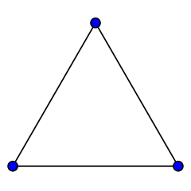
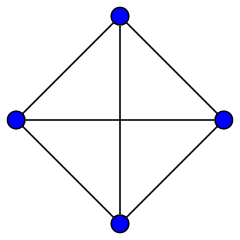
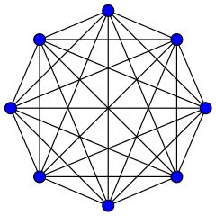
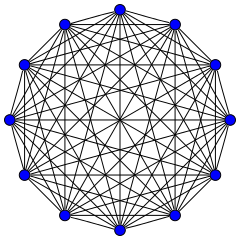

3 Approaches to building code
3.1 The single developer model
When you have organic code development with no constraints:
- Work from the inside out. Increase the complexity and generality of your code as circumstances demand.
- Given (1), commit to rewriting your code on an ongoing basis.
- Use code organization (functions, objects, modules, etc.) to reduce cognitive overhead
- Compartmentalizing your code makes it easier to navigate and understand
- Code chunks that are truly done can be "frozen" as compartmentalized functions or modules, making it easier to reason about and rewrite the remaining code
- Preserve useful practices across projects by developing a standard approach and toolkit
3.2 The collaborative model
3.2.1 The fundamental problem of project management
According to graph theory, communication channels grow as the square of the number of people: n(n -1) / 2
- 2 people - 1 channel

- 3 people - 3 channels

- 4 people - 6 channels

- 5 people - 10 channels

- 8 people - 28 channels

- 12 people - 66 channels

3.2.2 Coordination and planning
To scaffold from single person to a large project, you need coordination and planning for both your code and the people on your team.
3.2.2.1 Coordination and planning for code
- Functional divisions: Organize the code base into (somewhat) separable concerns
- Each functional division should have a functional lead (the point person who makes sure that work moves forward). Depending on project size, they may be the only person.
- Functional interfaces: How do the functional pieces work together or communicate? This can be implicit (we all agree how it's going to work) or explicit (we write an API for different parts of the code to communicate). APIs are generally the hallmark of a large code base, and overkill for a small one. However, it's still important to think about how the parts of the project work together, because it requires explicit collaboration in the design and in determining what can be released when.
3.2.2.2 Coordination and planning for people
- Release schedule: What goes in what release? Who works on what?
- Integrating new team members
- Assigning new issues and bug fixes
- Repository management: Branching strategy, merging, tagging
- Test and release oversight: Have we done enough testing? Do we release with known bugs? Do we delay releases? Do we revisit these decisions as our hypothetical due date slips further into the past?
3.2.3 However! Your planning process needs to be responsive to emerging needs and discoveries
3.2.3.1 You want to recapture some of that "organic" code development
- Versioned releases containing planned improvements and fixes ("in 3.1, we will add…")
- Rules for deprecation (e.g. overloading APIs, offering alternative APIs) as the project expands or changes.
- Community bug reports and feature requests
- User field studies (telemetry is too narrow; what you really want are patterns of behavior. What irritates or stumps people when they try to use the code?)
3.2.3.2 You want to avoid doing unnecessary work
What's the difference between "enough" code organization and "too much" code organization? If you're making things that you'll never use, you're spending too much time organizing and not enough time doing. That's how you end up with AbstractSingletonProxyFactoryBean